fasstr, the Flow Analysis Summary Statistics Tool for R,
is a set of R functions to
tidy, summarize, analyze, trend, and visualize streamflow data. This
package summarizes continuous daily mean streamflow data into various
daily, monthly, annual, and long-term statistics, completes trending and
frequency analyses, with outputs in both table and plot formats.
This vignette documents the usage of the many functions and arguments
provided in fasstr. This vignette is a high-level adjunct
to the details found in the various function documentations (see
help(package = "fasstr") for documentation). You’ll learn
how to install the package and a HYDAT database, input data into
fasstr functions, add relevant columns and rows to daily
data, screen data for outliers and missing dates, calculate and
visualize various summary statistics, trend annual flows, and complete
volume frequency analyses.
A quick reference PDF cheat sheet is also available for
fasstr usage of functions and arguments. It can be
downloaded here.
This guide contains the following sections to help understand the
usage of the fasstr functions and arguments:
- Getting Started
- Flow Data Inputs
- Function Outputs
- Data Tidying (
fill_*andadd_*functions) - Data Screening (
screen_*functions) - Calculating Statistics (
calc_*functions) - Analyses (
compute_*functions) - Customizing Functions - Data filtering and options
- Writing Tables and Plots (
write_*functions)
1. Getting Started
Installing and loading fasstr
You can install fasstr directly from CRAN:
install.packages("fasstr")To install the development version from GitHub, use the remotes
package then the fasstr package:
if(!requireNamespace("remotes")) install.packages("remotes")
remotes::install_github("bcgov/fasstr")Several other packages will be installed with fasstr.
These include tidyhydat
for downloading Water Survey of Canada hydrometric data, zyp for
trending, ggplot2
for creating plots, and tidyr
and dplyr
for data wrangling and summarizing, amongst others.
To call fasstr functions you can either load the package
using the library() function or access a specific function
using a double-colon (e.g. fasstr::calc_daily_stats()).
fasstr exports the pipe, %>%, so it can be
used for tidy workflows.
Downloading HYDAT
To use the station_number argument of the
fasstr functions, you will need to download a Water
Survey of Canada HYDAT database to your computer using the following
tidyhydat function. The function will save the database on
your computer and know where to find it each time you open R or RStudio.
Due to the size of the database, it will take several minutes to
download.
tidyhydat::download_hydat()As HYDAT is updated frequently you may want to periodically update it yourself using the function above. You can check the local version using the following code:
tidyhydat::hy_version()2. Flow Data Inputs
All functions in fasstr require a daily mean streamflow
data set from one or more hydrometric stations. Long-term and continuous
data sets are preferred for most analyses, but seasonal and partial data
can be used. Note that if partial data sets are used, NA‘s
may be produced for certain statistics. Please see the ’Handling Missing
Dates’ section in Section 8 for more information. Data is provided to
each function using one of the following arguments:
-
data, as a data frame of daily flow values, or -
station_number, as a list of Water Survey of Canada HYDAT station numbers.
data (and dates, values, and
groups)
Using the data option, a data frame of daily data
containing columns of dates (YYYY-MM-DD in date format), values (mean
daily discharge in cubic metres per second in numeric format), and,
optionally, grouping identifiers (character string of station names or
numbers) is called. By default, the functions will look for columns
identified as ‘Date’, ‘Value’, and ‘STATION_NUMBER’, respectively, to be
compatible with the HYDAT default columns. However, columns of different
names can be identified using the dates,
values, groups column arguments (ex.
values = Yield_mm). The values of these arguments are not
required to be surrounded by quotes; both "Date" and
Date will provide the appropriate column called “Date”. An
example where groupings other than station numbers could be used include
certain time periods of a study for a single station (before, during,
and after watershed experiment treatments or before and after the
construction of a dam, appropriately identified in a column). The
following is an example of an appropriate data frame with default column
names (STATION_NUMBER not required):
STATION_NUMBER Date Value
1 08NM116 1949-04-01 1.13
2 08NM116 1949-04-02 1.53
3 08NM116 1949-04-03 2.07
4 08NM116 1949-04-04 2.07
5 08NM116 1949-04-05 2.21
6 08NM116 1949-04-06 2.21The following is an example fasstr function arguments if
your daily data data frame has the default columns names (no need to
list them):
calc_longterm_daily_stats(data = flow_data)The following is an example if your daily data data frame has non-default columns names of “Stations”, “Dates”, and “Flows”:
calc_longterm_daily_stats(data = flow_data,
dates = Dates,
values = Flows,
groups = Stations)The data argument is listed first in the list of
arguments for each function, so flow data frames can be passed onto
fasstr functions using the pipe operator,
%>%, without listing the data frame in a tidy
workflow.
station_number
Alternatively, you can directly extract flow data directly from a
HYDAT database by listing station numbers in the
station_number argument while leaving the data arguments
blank. Data frames from HYDAT also include ‘Parameter’ and ‘Symbol’
columns. The following is an example of listing stations:
calc_longterm_daily_stats(station_number = "08NM116")
calc_longterm_daily_stats(station_number = c("08NM116", "08NM242"))This package allows for multiple stations (or other groupings) to be
analyzed in many of the functions; provided they are identified using
the groups column argument (defaults to STATION_NUMBER). If
named grouping column doesn’t exist or is improperly named then all
values listed in the values column will be summarized.
3. Function Types and Outputs
fasstr provides various functions to help in streamflow
analyses. They can be generally categorized into the following groups
(with more details in the sections below):
- data tidying (to prepare data for analyses;
add_*andfill_*functions), - data screening (to look for outliers and missing data;
screen_*functions), - calculating summary statistics (long-term, annual, monthly and daily
statistics;
calc_*functions), - computing analyses (volume frequency analyses and trending;
compute_*functions), - visualizing data (plotting the various statistics;
plot_*functions), and - writing data (to save your data and plots;
write_*functions)
Tibble Data Frames
Functions that produce tables create them as tibble data frames. To
facilitate the writing of the fasstr tibbles to a directory
as .csv, .xls, or .xlsx files with some functionality of rounding
digits, the write_results() function can be used (see
section 9 for more information).
ggplot2 Plots
Functions that produce plots create them as lists of
ggplot2 objects. The use of ggplot2 plots
allows for further customization of plots for the user (axis titles,
colours, etc.). All plotting functions produce lists to be consistent
with table naming conventions of fasstr, allow multiple
plots to be created with one function, and to easily allow the saving of
multiple plots to a directory. To assist with the saving of lists of
plots, a provided function called write_plots() will
directly save the list of plots within a directory or single PDF
document, with the fasstr plot objects names (see section 9
for more information). Individual plots can be subsetted from their
lists using either the dollar sign, $
(e.g. one_plot <- plots$plotname), or double square
brackets, [ ] (e.g. one_plot <- plots[[plotname]] or
one_plot <- plots[[1]]).
Some functions produce both tibbles and plots as lists and can be subsequently subsetted as desired.
4. Data Tidying Functions
There are several functions that are used to prepare your flow data
set for your own analysis. These functions begin with add_
or fill_ and add columns or rows, respectively, to your
flow data frame. These functions include:
-
fill_missing_dates()- fills in missing dates or dates with no flow values with NA -
add_date_variables()- add year, month, and day of year variables (and water years if selected) -
add_seasons()- add a column of seasons -
add_rolling_means()- add rolling n-day averages (e.g. 7-day rolling average) -
add_basin_area()- add a basin area column to daily flows -
add_daily_volume()- add daily volumetric flows (in cubic metres) -
add_daily_yield()- add daily water yields (in millimetres) -
add_cumulative_volume()- add daily cumulative volumetric flows on an annual basis (in cubic metres) -
add_cumulative_yield()- add daily cumulative water yields on an annual basis (in millimetres)
The functions are set up to easily incorporate the use of the pipe operator:
fill_missing_dates(station_number = "08HA011") %>%
add_date_variables() %>%
add_rolling_means(roll_days = 7) STATION_NUMBER Date Parameter Value Symbol CalendarYear Month MonthName
1 08HA011 1960-01-01 Flow 62.9 E 1960 1 Jan
2 08HA011 1960-01-02 Flow 58.0 E 1960 1 Jan
3 08HA011 1960-01-03 Flow 54.9 E 1960 1 Jan
4 08HA011 1960-01-04 Flow 51.3 E 1960 1 Jan
5 08HA011 1960-01-05 Flow 47.3 <NA> 1960 1 Jan
6 08HA011 1960-01-06 Flow 46.7 <NA> 1960 1 Jan
WaterYear DayofYear Q7Day
1 1960 1 NA
2 1960 2 NA
3 1960 3 NA
4 1960 4 NA
5 1960 5 NA
6 1960 6 NAFilling missing dates
To ensure that analyses do not skip over dates, the
fill_missing_dates() function looks for gaps in dates and
adds the dates and fills in the flow values with NA. It
does not do any gap filling (linear or correlations, for example), it
assigns missing flow values with NA. It also fills dates to
create complete start and end years. For example, if data starts in
April, all flow values starting from January will be filled with
NA. The timing of the year depends on the
water_year_start argument. When
water_year_start is left blank, it will fill to complete
calendar years (Jan-Dec). If water_year_start is set to
another month (numeric) then it will fill to complete water years of the
desired year.
Run and compare the following lines to see how missing dates are filled:
# Very gappy (early years):
tidyhydat::hy_daily_flows(station_number = "08NM116")
# Gap filled with NA's
tidyhydat::hy_daily_flows(station_number = "08NM116") %>%
fill_missing_dates()It is ideal to fill missing dates before using other
add_* functions so dates added are not missing the other
new date values.
Adding date variables and seasons
The add_date_variables() function adds useful dates
columns for summarizing data. The function defaults include
‘CalendarYear’, ‘Month’ (numeric), ‘MonthName’ (month abbreviation;
e.g. Jan), ‘WaterYear’ (year based on selected
water_year_start), and ‘DayofYear’ (the day of year based
on selected water_year_start from 1-365). The month of the
start of the water year is chosen using the
water_year_start argument, which defaults to “1” for
January.
Run and compare the following lines to see how the date columns are added:
# Just calendar year info
add_date_variables(station_number = "08NM116")
# If water years are required starting August (use month number)
add_date_variables(station_number = "08NM116",
water_year_start = 8)The add_seasons() function adds a column of seasons
identifiers called “Season”. The length of seasons, in months, is
provided using the seasons_length argument. As seasons are
grouped by months the length of the seasons must be divisible into 12
with season lengths of 1, 2, 3, 4, 6, or 12 months. The start of the
first season coincides with the start month of each year; ‘Jan-Jun’ for
6-month seasons starting with calendar years or ‘Dec-Feb’ for 3-month
seasons starting with water year starting in December. Run and compare
the following lines to see how seasons columns are added:
# 2 seasons starting January
add_seasons(station_number = "08NM116",
seasons_length = 6)
# 4 seasons starting October
add_seasons(station_number = "08NM116",
water_year_start = 10,
seasons_length = 3)
# 4 Seasons starting December
add_seasons(station_number = "08NM116",
water_year_start = 12,
seasons_length = 3)Adding rolling means
Adding rolling means (running means or averages) of daily data, can
be done using the add_rolling_means() functions. Based on
the selected “n” rolling days using the roll_days argument,
a column for each “n” will be added. One rolling mean column can be
added by listing one number (e.g. roll_days = 7) or
multiple columns can be added by listing each one
(e.g. roll_days = c(3,7,30)). Each column will be named
“Q’n’Day” where n is the number (e.g. Q7Day or Q30Day).
Where the alignment of the rolling mean is compared to the date is
important to know when analyzing data. The alignment, using the
roll_align argument, determine the date at which the
rolling means occur.
-
roll_align = "right"- the date will have the mean of that date’s flow value and the previous n-1 days -
roll_align = "left"- the date will have the mean of that date’s flow value and the next n-1 days roll_align = "center"- odd numbered
roll_days- date will have the mean of that date’s flow value and half of n-1 days before and half of n-1 days after - even numbered
roll_days- date will have the mean of that date’s flow and half of n days after, and the remaining before ((n/2)-1 days before the date) (i.e. the first of the middle two dates)
Odd roll_days example (column headers have alignment direction added):
Date Value Q5Day_left Q5Day_center Q5Day_right
1 1960-01-01 62.9 54.88 NA NA
2 1960-01-02 58.0 51.64 NA NA
3 1960-01-03 54.9 48.82 54.88 NA
4 1960-01-04 51.3 46.22 51.64 NA
5 1960-01-05 47.3 44.12 48.82 54.88
6 1960-01-06 46.7 42.36 46.22 51.64Even roll_days example:
Date Value Q6Day_left Q6Day_center Q6Day_right
1 1960-01-01 62.9 53.51667 NA NA
2 1960-01-02 58.0 50.35000 NA NA
3 1960-01-03 54.9 47.66667 53.51667 NA
4 1960-01-04 51.3 45.31667 50.35000 NA
5 1960-01-05 47.3 43.18333 47.66667 NA
6 1960-01-06 46.7 41.53333 45.31667 53.51667Adding basin areas
To add a column of basin areas, for viewing or analyzing, the
add_basin_area() function can be used. The basin area will
be extracted from HYDAT, if available, under two conditions where the
basin_area argument can be left blank:
- if the
station_numberargument is used - if your
datadata frame has a grouping column consisting of HYDAT station numbers
If you would like to apply your own basin area size(s) or override
the HYDAT areas, you use the basin_area argument in the
following ways:
- for a single station or applying to all stations, list a single
number (i.e.
basin_area = 800) - for different areas for multiple stations, you list each basin area
for each station
(i.e.
basin_area = c("08NM116" = 800, "08NM242" = 4))
Run and compare the following lines to see how basin area columns are added:
# Using the station_number argument or data frame as HYDAT groupings
add_basin_area(station_number = "08NM116")
# Using the basin_area argument
add_basin_area(station_number = "08NM116",
basin_area = 800)
# Using the basin_area argument with multiple stations
add_basin_area(station_number = c("08NM116","08NM242"),
basin_area = c("08NM116" = 800, "08NM242" = 4))Adding daily volumetric discharge or water yields
Converting daily mean discharge into other units can be useful for
different analyses. Columns of total daily discharge converted from
daily mean into volumetric flows, named “Volume_m3” in cubic metres per
second, or area-based water yields, named “Yield_mm” in millimetres, can
be used using the add_daily_volume() and
add_daily_yield() functions, respectively. Volumetric gives
the total volume per day, and the water yield gives the total water
depth, provided an upstream drainage basin area is provided. Basin area
can be provided using the basin_area argument, or if there
is a groups column of HYDAT station numbers in your data
then it will automatically be extracted from HYDAT, if available. (see
`adding basin areas above or section 8 for more information).
# Add a column of converted discharge (m3/s) into volume (m3)
add_daily_volume(station_number = "08NM116")
# Add a column of converted discharge (m3/s) into yield (mm), with HYDAT station groups
add_daily_yield(station_number = "08NM116")
# Add a column of converted discharge (m3/s) into yield (mm), with setting the basin area
add_daily_yield(station_number = "08NM116",
basin_area = 800) Adding annual cumulative daily volumetric flows or water yields
These functions create a rolling cumulative of daily total flows on an annual basis, as volumetric flows, named “Cumul_Volume_m3” in cubic metres per second, or area-based water yields, named “Cumul_Yield_mm” in millimetres. A total flow for a given a day is the sum of all previous days and that day, within a given year (Jan 15 cumulative flow value is the sum of all total flows from Jan 1-15). It restarts for each year (based on the starting month) and no values for a year are calculated if there is missing data for a given year as the total for a given year cannot be determined.
# Add a column of cumulative volumes (m3)
add_cumulative_volume(station_number = "08NM116")
# Add a column of cumulative yield (mm), with HYDAT station number groups
add_cumulative_yield(station_number = "08NM116")
# Add a column of cumulative yield (mm), with setting the basin area
add_cumulative_yield(station_number = "08NM116",
basin_area = 800) Pipelines
By utilizing the data argument as the first one list, it
enables the user to work with the tidying functions within a tidy
‘pipeline’ and can pass onto the other fasstr
functions.
fill_missing_dates(station_number = "08NM116") %>%
add_date_variables(water_year_start = 9) %>%
add_seasons(seasons_length = 3) %>%
add_rolling_means() %>%
add_basin_area() %>%
add_daily_volume() %>%
add_daily_yield() %>%
add_cumulative_volume() %>%
add_cumulative_yield()5. Data Screening Functions
If you are looking at some data for the first time, it may be useful to explore the data quality and availability. The following functions will help to explore the data:
-
plot_flow_data()- plot daily mean streamflow -
plot_flow_data_symbols()- plot daily mean streamflow with their symbols -
screen_flow_data()- calculate annual summary and identify missing data -
plot_data_screening()- plot annual summary statistics for data screening -
plot_missing_dates()- plot annual and monthly missing dates -
plot_annual_symbols()- plot annual counts of symbols
To view the entire daily flow data set to view for gaps and outliers,
or changes in flow over time, the plot_flow_data() function
will plot all daily data in the data frame. The plot can be filtered by
years and dates.
plot_flow_data(station_number = "08NM116") $Daily_Flows
When plotting multiple stations, they automatically produce a
separate plot for each station. However, setting
one_plot = TRUE will plot all stations on the same
plot.
plot_flow_data(station_number = c("08NM241", "08NM242"),
one_plot = TRUE) $Daily_Flows
To view a flow time series data quality from their provided HYDAT
symbols (qualifer symbols like E for estimate, B for under ice etc.), or
custom symbols/categories from a column called “Symbol”, the
plot_flow_data() function will plot all daily data in the
data frame. The plot can be filtered by years and dates.
plot_flow_data_symbols(station_number = "08NM116",
start_year = 1972, end_year = 1976) $Flow_Data_Symbols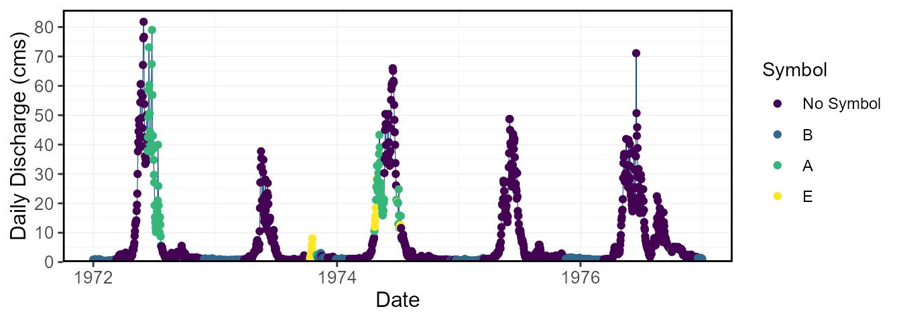
The screen_flow_data() function provides an overview of
the number of flow values per year and each month per year, along with
annual minimums, maximums, means, and standard deviations to inspect for
outliers in the data.
screen_flow_data(station_number = "08NM116") STATION_NUMBER Year n_days n_Q n_missing_Q E_Symbol No_Symbol B_Symbol
1 08NM116 1949 365 183 182 10 173 0
2 08NM116 1950 365 183 182 0 183 0
3 08NM116 1951 365 183 182 0 183 0
4 08NM116 1952 366 183 183 0 183 0
5 08NM116 1953 365 183 182 0 183 0
6 08NM116 1954 365 183 182 0 183 0
A_Symbol Minimum Maximum Mean Median StandardDeviation Jan_missing_Q
1 0 0.623 49.3 7.771066 2.27 10.49771 31
2 0 0.623 52.1 7.760432 2.07 10.77839 31
3 0 0.623 49.3 8.991197 3.71 10.91531 31
4 0 0.850 50.7 10.277541 3.17 11.87987 31
5 0 0.340 62.3 8.303328 4.56 9.52511 31
6 0 0.566 36.2 11.281011 5.38 10.96519 31
Feb_missing_Q Mar_missing_Q Apr_missing_Q May_missing_Q Jun_missing_Q
1 28 31 0 0 0
2 28 31 0 0 0
3 28 31 0 0 0
4 29 31 0 0 0
5 28 31 0 0 0
6 28 31 0 0 0
Jul_missing_Q Aug_missing_Q Sep_missing_Q Oct_missing_Q Nov_missing_Q
1 0 0 0 31 30
2 0 0 0 31 30
3 0 0 0 31 30
4 0 0 0 31 30
5 0 0 0 31 30
6 0 0 0 31 30
Dec_missing_Q
1 31
2 31
3 31
4 31
5 31
6 31To view the summary data in the screen_flow_data()
function, the plot_data_screening() function will plot the
annual minimums, maximums, means, medians, and standard deviations, with
the point coloured by data availability.
plot_data_screening(station_number = "08NM116") $Data_Screening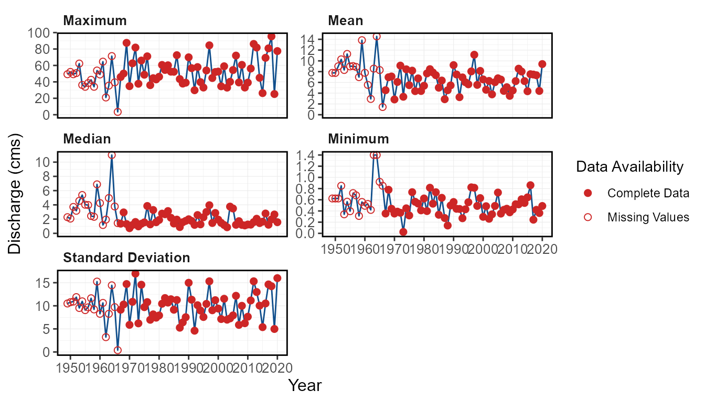
Use the plot_missing_dates() function to plot out the
missing dates for each month of each year to view for data availability
and gaps.
plot_missing_dates(station_number = "08NM116") $Missing_Dates
Use the plot_annual_symbols() function to plot the
symbols on an annual basis to view the data quality and data
availability. The default plots by day of year, but there are options to
view annual counts of symbols.
plot_annual_symbols(station_number = "08NM116") $Annual_SymbolsWarning:
[1m
[22mRemoved 146 rows containing missing values or values outside the scale range
(`geom_tile()`).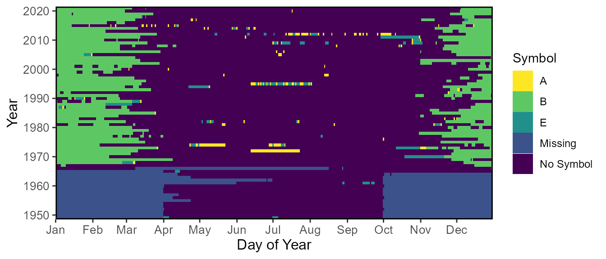
6. Functions for Calculating Statistics
The majority of the fasstr functions produce statistics
over a certain time period, either long-term, annually, monthly, or
daily. These statistics are produced using the calc_*
functions and can be visualized using their corresponding
plot_* functions. The following sections are an overview of
these functions.
Basic Summary Statistics
These functions calculate the means, medians, maximums, minimums, and
percentiles (choose using the percentiles argument) of a
flow data set:
-
calc_longterm_daily_stats()- calculate the long-term and long-term monthly summary statistics based on daily mean flows -
calc_longterm_monthly_stats()- calculate the long-term annual and monthly summary statistics based on monthly mean flows -
calc_annual_stats()- calculate annual summary statistics -
calc_monthly_stats()- calculate annual monthly summary statistics -
calc_daily_stats()- calculate daily summary statistics
These basic statistics can also be viewed using their corresponding plotting functions:
-
plot_longterm_daily_stats()- plot the long-term monthly summary statistics based on daily mean flows -
plot_longterm_monthly_stats()- plot the long-term monthly summary statistics based on annual monthly mean flows -
plot_annual_stats()- plot annual summary statistics -
plot_monthly_stats()- plot annual monthly summary statistics -
plot_daily_stats()- plot daily summary statistics
This function produced flow duration curves:
-
plot_flow_duration()- plot flow duration curves
These other long-term functions summarize the data over the entire record:
-
calc_longterm_mean()- calculate the long-term mean annual discharge -
calc_longterm_percentile()- calculate the long-term percentiles -
calc_flow_percentile()- calculate the percentile rank of a flow value
Basic long-term statistics
The long-term calc_ and plot_ functions
calculate the long-term and long-term monthly mean, median, maximum,
minimum, and percentiles of all daily mean flows.
For calc_longterm_daily_stats(), for a given month, all
daily flow values for a given month over the entire record are
summarized together. For the ‘Long-term’ category, it summarizes all
flow values over the entire record to determine the mean, median,
maximum, minimum, and selected percentiles of daily flows. You can also
specify a certain period of months to summarize together (ex. Jul-Sep
flows) using the custom_months argument (listing the
months) and labeling it using the custom_months_label
argument (ex. “Summer Flows”).
calc_longterm_daily_stats(station_number = "08NM116",
start_year = 1974) STATION_NUMBER Month Mean Median Maximum Minimum P10 P90
1 08NM116 Jan 1.116021 0.930 9.50 0.160 0.5717 1.750
2 08NM116 Feb 1.118619 0.934 5.81 0.140 0.5070 1.880
3 08NM116 Mar 1.732962 1.230 17.50 0.380 0.6800 3.369
4 08NM116 Apr 8.135122 5.780 53.50 0.505 1.4200 18.120
5 08NM116 May 25.034315 22.000 95.40 2.550 10.4700 43.900
6 08NM116 Jun 22.137576 19.650 86.20 0.450 6.0990 40.500
7 08NM116 Jul 6.137695 3.825 76.80 0.332 1.1870 13.630
8 08NM116 Aug 2.157565 1.620 22.40 0.427 0.8494 3.990
9 08NM116 Sep 2.295582 1.615 17.60 0.364 0.7880 4.700
10 08NM116 Oct 2.136288 1.695 15.20 0.267 0.8637 4.082
11 08NM116 Nov 1.962619 1.570 11.70 0.260 0.6117 3.750
12 08NM116 Dec 1.271259 1.080 7.30 0.244 0.5500 2.166
13 08NM116 Long-term 6.282538 1.805 95.40 0.140 0.7080 19.900The plot_longterm_daily_stats() will plot the monthly
mean, median, maximum, and minimum values along with selected inner and
outer percentiles ribbons on one plot. Change the inner and outer
percentile ranges using the inner_percentiles and
outer_percentiles arguments, remove the maximum and minimum
ribbon using include_extremes = FALSE, or add a specific
year using add_year.
plot_longterm_daily_stats(station_number = "08NM116",
start_year = 1974,
inner_percentiles = c(25,75),
outer_percentiles = c(10,90)) $`Long-term_Daily_Statistics`
Similarly, the calc_longterm_monthly_stats() functions
will calculate the mean, median, maximum, and percentiles of monthly
mean flows from all years. Meaning the all daily flows for each month
and each year are averaged, and the statistics are based on these annual
monthly means. The “Annual” data row summarizes the mean, median,
maximum, and percentiles from all annual means.
calc_longterm_monthly_stats(station_number = "08NM116",
start_year = 1974) STATION_NUMBER Month Mean Median Maximum Minimum P10
1 08NM116 Jan 1.116021 0.9628871 6.117742 0.3155161 0.6246903
2 08NM116 Feb 1.119439 0.9530400 3.831786 0.3528276 0.5169643
3 08NM116 Mar 1.732962 1.3363387 6.926774 0.5067419 0.8178419
4 08NM116 Apr 8.135122 7.7333333 23.880333 1.5993333 3.0382333
5 08NM116 May 25.034315 23.8032259 48.122581 13.9861288 16.1880001
6 08NM116 Jun 22.137576 21.5011668 48.640000 3.1504333 10.8967667
7 08NM116 Jul 6.137695 4.4229032 25.639355 0.9213871 1.8967678
8 08NM116 Aug 2.157565 1.7775806 10.193548 0.8721290 1.1333774
9 08NM116 Sep 2.295582 1.7156667 8.109333 0.6999667 1.0157533
10 08NM116 Oct 2.136288 1.8703226 5.661290 0.5329032 1.0412000
11 08NM116 Nov 1.962619 1.6126333 5.413667 0.4982333 0.7207867
12 08NM116 Dec 1.271259 1.1046774 3.648387 0.4502581 0.5605258
13 08NM116 Annual 6.282280 6.2583836 11.134121 2.8761370 4.2507660
P90
1 1.633452
2 1.689794
3 2.739387
4 12.749600
5 33.679355
6 36.800667
7 12.676645
8 3.362903
9 3.959333
10 3.616171
11 3.294233
12 2.084677
13 8.438567The corresponding plot_longterm_monthly_stats() function
plots the data, with similar options as
plot_longterm_daily_stats().
plot_longterm_monthly_stats(station_number = "08NM116",
start_year = 1974) $`Long-term_Monthly_Statistics`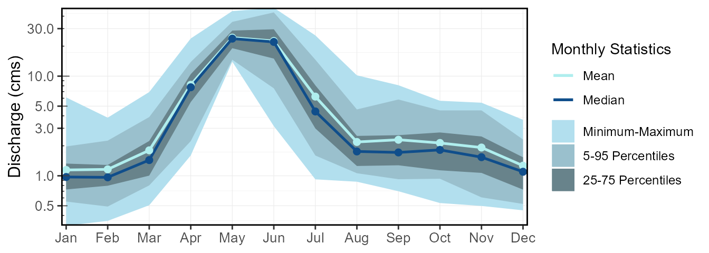
Basic annual statistics
The calc_annual_stats() and
plot_annual_stats() functions calculate the mean, median,
maximum, minimum, and percentiles of daily flows for every year of data
provided. In calculating, all daily flow values are grouped by year.
calc_annual_stats(station_number = "08NM116",
start_year = 1974) STATION_NUMBER Year Mean Median Maximum Minimum P10 P90
1 08NM116 1974 8.430181 1.34 66.0 0.447 0.7092 32.98
2 08NM116 1975 5.482636 1.54 48.7 0.320 0.5800 19.58
3 08NM116 1976 8.180694 3.84 71.1 0.736 0.8835 25.55
4 08NM116 1977 4.381567 1.26 36.0 0.564 0.7760 17.20
5 08NM116 1978 6.747608 3.28 44.5 0.532 0.8278 19.70
6 08NM116 1979 4.401564 1.56 43.0 0.411 0.6182 15.88The percentiles in the plot_annual_stats() function are
fully customizable like the calc_ function.
plot_annual_stats(station_number = "08NM116",
start_year = 1974,
log_discharge = TRUE) $Annual_StatisticsWarning in ggplot2::scale_y_log10(expand = ggplot2::expansion(mult = c(0.02, :
[1m
[22m
[32mlog-10
[39m transformation introduced infinite values.
Basic monthly statistics
The calc_monthly_stats() and
plot_monthly_stats() functions calculate the mean, median,
maximum, minimum, and percentiles of daily flows for each month of each
year. In calculating, all daily flow values are grouped by year and
month.
calc_monthly_stats(station_number = "08NM116",
start_year = 1974) STATION_NUMBER Year Month Mean Median Maximum Minimum P10 P90
1 08NM116 1974 Jan 1.0234194 1.020 1.26 0.864 0.9060 1.120
2 08NM116 1974 Feb 0.9848214 0.984 1.06 0.830 0.9442 1.043
3 08NM116 1974 Mar 1.2113226 1.120 2.14 0.855 0.9370 1.970
4 08NM116 1974 Apr 7.7613333 4.910 28.30 1.850 1.9190 18.680
5 08NM116 1974 May 29.8451611 30.300 50.40 15.900 17.5000 43.300
6 08NM116 1974 Jun 44.4600002 44.900 66.00 20.600 25.6100 61.250The percentiles in the plot_monthly_stats() function are
fully customizable like the calc_ function. A plot for each
different statistic (means, medians, percentiles, etc.) is created to
visualize the monthly patterns over the years.
plot_monthly_stats(station_number = "08NM116",
start_year = 1974)[1]$Mean_Monthly_Statistics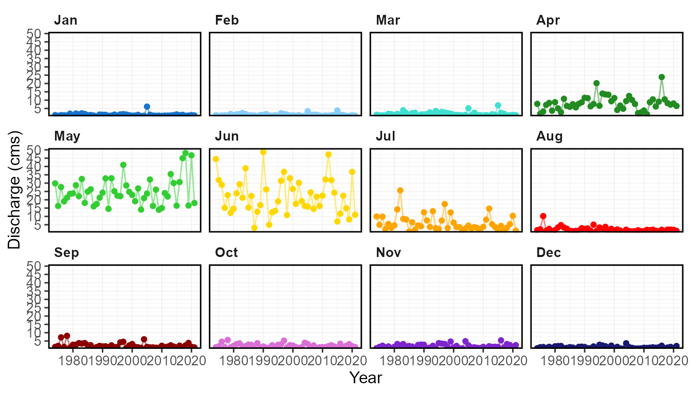
Basic daily statistics
The calc_daily_stats() and
plot_daily_stats() functions calculate the mean, median,
maximum, minimum, and percentiles of daily flows for each day of the
year. For example, for a given day of year (i.e. day 1 (Jan-01) or day 2
(Jan-02)), all flow values for that day from the entire record are
summarized together. Only the first 365 days of each year are summarized
(ignores the 366th day from leap years). In calculating, all daily flow
values are grouped by day of year.
calc_daily_stats(station_number = "08NM116",
start_year = 1974) STATION_NUMBER Date DayofYear Mean Median Minimum Maximum P5
1 08NM116 Jan-01 1 1.068750 0.9860 0.328 2.51 0.54725
2 08NM116 Jan-02 2 1.042771 0.9395 0.310 2.26 0.53400
3 08NM116 Jan-03 3 1.022583 0.9205 0.290 2.00 0.53050
4 08NM116 Jan-04 4 1.032208 0.9025 0.284 2.52 0.51335
5 08NM116 Jan-05 5 1.016521 0.8950 0.302 2.25 0.54050
6 08NM116 Jan-06 6 1.010042 0.8625 0.315 2.32 0.52045
P25 P75 P95
1 0.69150 1.2750 1.8500
2 0.69025 1.2750 1.8650
3 0.70300 1.1875 1.9215
4 0.73175 1.1975 1.8875
5 0.70950 1.1850 1.9105
6 0.73800 1.2400 1.8545The plotting daily statistics function will plot the monthly mean,
median, maximum, and minimum values along with selected inner and outer
percentiles ribbons on one plot. Change the inner and outer percentile
ranges using the inner_percentiles and
outer_percentiles arguments, remove the maximum and minimum
ribbon using include_extremes = FALSE, or add a specific
year using add_year.
plot_daily_stats(station_number = "08NM116",
start_year = 1974) $Daily_Statistics
plot_daily_stats(station_number = "08NM116",
start_year = 1974,
add_year = 2000) $Daily_Statistics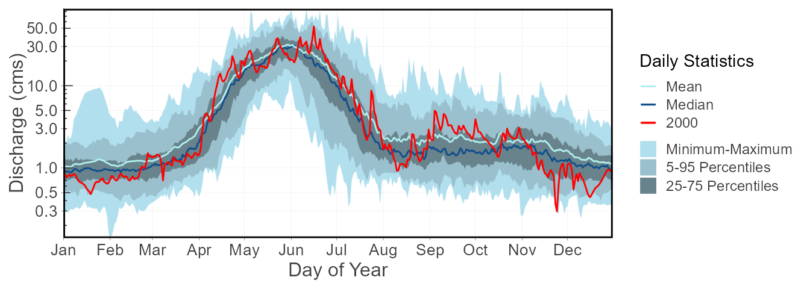
Flow Duration
Flow duration curves can be produced using the function, where selected months and time periods can be selected:
plot_flow_duration(station_number = "08NM116",
start_year = 1974) $Flow_Duration
plot_flow_duration(station_number = "08NM116",
start_year = 1974,
months = 7:9,
include_longterm = FALSE) $Flow_Duration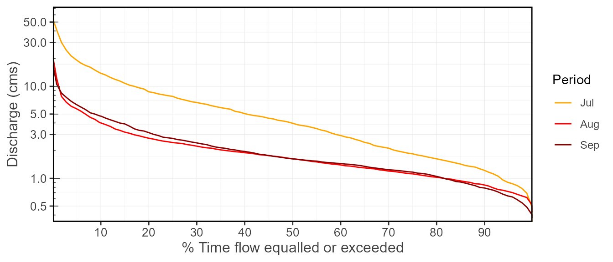
Other Long-term Statistics
calc_longterm_mean() calculates the mean of all the
daily flows, and specific percents of the long-term mean (using
percent_MAD argument). It can also be known as the
long-term mean annual discharge, MAD.
calc_longterm_mean(station_number = "08NM116",
start_year = 1974,
percent_MAD = c(5,10,20)) STATION_NUMBER LTMAD X5.MAD X10.MAD X20.MAD
1 08NM116 6.282538 0.3141269 0.6282538 1.256508calc_longterm_percentile() calculates the selected
long-term percentiles of all the daily flow values.
calc_longterm_percentile(station_number = "08NM116",
start_year = 1974,
percentiles = c(25,50,75)) STATION_NUMBER P25 P50 P75
1 08NM116 1.03 1.805 5.58calc_flow_percentile() calculates the percentile rank of
a specified flow value, provided as flow_value. It compares
the flow value to all daily flow values to determines the percentile
rank.
calc_flow_percentile(station_number = "08NM116",
start_year = 1974,
flow_value = 6.270) STATION_NUMBER Percentile
1 08NM116 76.506Basic statistics and plotting volumetric and yield flows
The calc_ and plot_ functions will
summarize any values provided to the functions with the default column
being ‘Value’. While for fasstr this defaults to daily mean
flows, any daily value can be summarized (water level, precipitation
amount, etc.) if the methods of analyses are similar for the parameter
type. As there are no units presented in the calc_
functions this should not be problem for most calculations. However, the
plots come standard with a “Discharge (cms)” y-axis, which can be
changed afterwards using ggplot2 functions.
To facilitate the plotting of the daily volume or yield statistics
from fasstr, after adding them to your flow data using the
add_daily_volume() or add_daily_yield()
functions, by listing the values argument as either
‘Volume_m3’ or ‘Yield_mm’ (from their respective add_*
functions), the discharge axis title will adjust accordingly.
add_daily_volume(station_number = "08NM116") %>%
plot_annual_stats(values = "Volume_m3",
start_year = 1974) $Annual_Statistics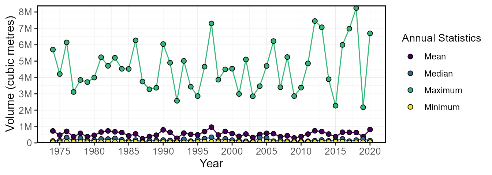
add_daily_yield(station_number = "08NM116") %>%
plot_daily_stats(values = "Yield_mm",
start_year = 1974) $Daily_Statistics
Cumulative Flow Statistics
Total volumetric of runoff yield flows within a given year can provide important hydrological information on a basin-wide scale. These functions calculate the total volume (in cubic metres) or yield (in millimetres; based on basin size) for a flow data set, at the annual, monthly, or daily cumulative scale.
-
calc_annual_cumulative_stats()- calculate annual (and seasonal) cumulative flows -
calc_monthly_cumulative_stats()- calculate cumulative monthly flow statistics -
calc_daily_cumulative_stats()- calculate cumulative daily flow statistics
These statistics can also be viewed using their corresponding plotting functions:
-
plot_annual_cumulative_stats()- plot annual and seasonal total flows -
plot_monthly_cumulative_stats()- plot cumulative monthly flow statistics -
plot_daily_cumulative_stats()- plot cumulative daily flow statistics
While these functions default to volumetric flows, using
use_yield = TRUE and basin_area arguments will
calculate totals in runoff yield. If there is a groups
column of HYDAT station numbers, then the function will automatically
pull the basin area out of HYDAT if available; otherwise a basin area
will be required. Due to the requirements of a complete annual data set
to calculate total flows, only years of complete data are used.
Cumulative annual statistics
The calc_annual_cumulative_stats() function provides the
total annual volume or runoff yield (if use_yield = TRUE is
used). It totals all flows for a given year in cubic metres.
calc_annual_cumulative_stats(station_number = "08NM116", start_year = 1974) STATION_NUMBER Year Total_Volume_m3
1 08NM116 1974 265854182
2 08NM116 1975 172900397
3 08NM116 1976 258693177
4 08NM116 1977 138177100
5 08NM116 1978 212792574
6 08NM116 1979 138807734By using the include_seasons = TRUE (logical TRUE/FALSE)
argument, total seasonal flows columns will be added to the results. Two
columns of two-seasons (2-six months), and four columns of four-seasons
(4-three months) will be added. The start month of the first seasons
will begin in the first month of the year (ex. Jan for Calendar years or
Oct for water years starting in October).
calc_annual_cumulative_stats(station_number = "08NM116",
start_year = 1974,
include_seasons = TRUE) STATION_NUMBER Year Total_Volume_m3 Jan.Jun_Volume_m3 Jul.Dec_Volume_m3
1 08NM116 1974 265854182 223662989 42191194
2 08NM116 1975 172900397 136045958 36854438
3 08NM116 1976 258693177 164417817 94275360
4 08NM116 1977 138177100 115279113 22897987
5 08NM116 1978 212792574 146659335 66133239
6 08NM116 1979 138807734 117444383 21363350
Jan.Mar_Volume_m3 Apr.Jun_Volume_m3 Jul.Sep_Volume_m3 Oct.Dec_Volume_m3
1 8368013 215294976 35216640 6974554
2 5258218 130787741 24657350 12197088
3 7154266 157263552 72438624 21836736
4 6635779 108643334 13898650 8999338
5 9063014 137596321 42360192 23773046
6 13535424 103908959 14050541 7312810The total volumes for each year can be plotted using the
plot_annual_cumulative_stats() function. When using
include_seasons = TRUE two additional plots will be
created, one for two- and four-seasons.
plot_annual_cumulative_stats(station_number = "08NM116",
start_year = 1974) $Total_Volume
Cumulative monthly and statistics
The calc_monthly_cumulative_stats() and
plot_monthly_cumulative_stats() functions calculate the
mean, median, maximum, minimum, and percentiles of total cumulative
monthly flows. For each month of each year, the total volume or runoff
yield is determined. Then within a given year, the cumulative total for
each month is determined by added all previous months (ex. Jan = Jan
total; Feb = Jan+Feb totals, etc.). Then the mean, median, maximum,
minimum, and percentiles are calculated based on those monthly
cumulative totals for each year. In interpreting the information, if a
given total flow is below the mean value, then the cumulative flow is
less than average, or less volume has passed through the station than
average at that point in time. The percentiles in the calc_
function are flexible using the percentiles argument.
calc_monthly_cumulative_stats(station_number = "08NM116",
start_year = 1974) STATION_NUMBER Month Mean Median Maximum Minimum P5
1 08NM116 Jan 2989150 2578997 16385760 845078.4 1511767
2 08NM116 Feb 5719475 4890888 24560928 1729123.2 2734102
3 08NM116 Mar 10361041 8635205 38265696 3086380.8 4918048
4 08NM116 Apr 31447278 28262347 74097331 9895046.4 13166271
5 08NM116 May 98499186 91484726 159751008 50343551.6 54647836
6 08NM116 Jun 155879782 156396614 255162529 76246877.0 91034245
7 08NM116 Jul 172318984 177471648 301884193 81422928.3 100164933
8 08NM116 Aug 178097805 180792130 311904865 84962822.7 103379933
9 08NM116 Sep 184047954 187290446 323685505 86777136.3 106057482
10 08NM116 Oct 189769786 192634934 337755745 88204464.3 109521011
11 08NM116 Nov 194856894 195413731 346120993 89495885.1 112134313
12 08NM116 Dec 198261834 197364384 351125627 90701856.3 113557244
P25 P75 P95
1 1952813 3339360 5216443
2 3765031 6026702 10457035
3 6599167 11733746 20042554
4 23414530 36003874 63254900
5 75785976 115911497 155790364
6 117396280 185669021 228096484
7 125320132 206338168 259162943
8 129012415 218750047 264965395
9 132618708 227954197 269259345
10 136306260 230884539 273618393
11 141394377 234482947 279956659
12 145426017 238912243 283363324The plot_monthly_cumulative_stats() function will plot
the monthly total mean, median, maximum, and minimum values along with
the 5th, 25th, 75th, and 95th percentiles all on one plot. The
percentiles are not customizable for this function.
plot_monthly_cumulative_stats(station_number = "08NM116",
start_year = 1974) $Monthly_Cumulative_Volumetric_Stats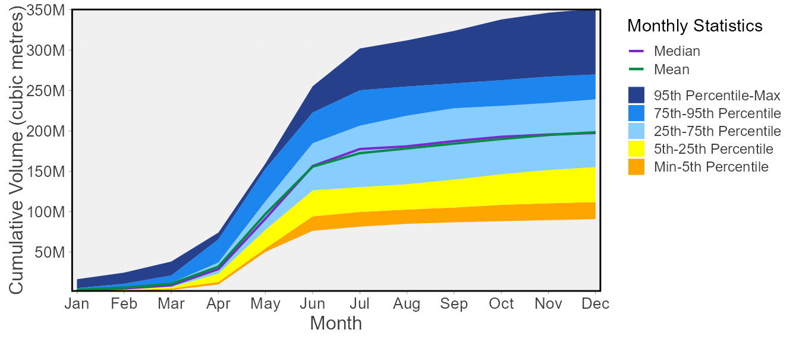
Cumulative daily statistics
The calc_daily_cumulative_stats() and
plot_daily_cumulative_stats() functions calculate the mean,
median, maximum, minimum, and percentiles of total cumulative daily
flows. For each day of each year, the total volume or runoff yield is
determined. Then within a given year, the cumulative total for each day
is determined by added all previous days (ex. Jan-01 = Jan-01 total;
Jan-02 = Jan-01+Jan-02 totals, etc.). Then the mean, median, maximum,
minimum, and percentiles are calculated based on those daily cumulative
totals for each year. In interpreting the information, if a given total
flow is below the mean value, then the cumulative flow is less than
average. In other words, less volume has passed through the station than
normal at that point in time. Viewing the plot below may help understand
how this function works. The percentiles in the calc_
function are flexible using the percentiles argument.
calc_daily_cumulative_stats(station_number = "08NM116",
start_year = 1974) STATION_NUMBER Date DayofYear Mean Median Minimum Maximum P5
1 08NM116 Jan-01 1 92340.0 85190.4 28339.2 216864 47282.4
2 08NM116 Jan-02 2 182435.4 166363.2 55123.2 412128 93139.2
3 08NM116 Jan-03 3 270786.6 245203.2 80179.2 581472 137570.4
4 08NM116 Jan-04 4 359969.4 320241.6 104716.8 768960 184528.8
5 08NM116 Jan-05 5 447796.8 392601.6 130809.6 952992 234036.0
6 08NM116 Jan-06 6 535064.4 466732.8 158025.6 1123200 283024.8
P25 P75 P95
1 59745.6 110160.0 159840.0
2 119383.2 218160.0 325123.2
3 178891.2 328968.0 482328.0
4 241358.4 429408.0 620352.0
5 309182.4 531576.0 776779.2
6 368366.4 636033.6 953942.4The plot_daily_cumulative_stats() function will plot the
daily cumulative total mean, median, maximum, and minimum values along
with the 5th, 25th, 75th, and 95th percentiles all on one plot. The
percentiles are not customizable for this function.
plot_daily_cumulative_stats(station_number = "08NM116",
start_year = 1974,
use_yield = TRUE) $Daily_Cumulative_Yield_Stats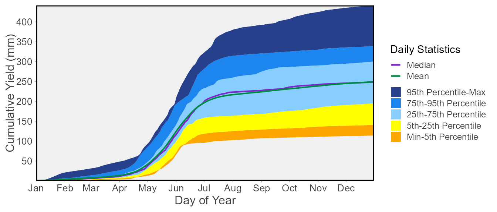
Other Annual Statistics
Beside the basic summary statistics, there are other useful statistics for interpreting annual streamflow data. They include the following::
-
calc_annual_flow_timing()- calculate annual flow timing -
calc_annual_lowflows()- calculate multiple n-day annual low flow values and dates -
calc_annual_highflows()- calculate multiple n-day annual high flow values and dates -
calc_annual_extremes()- calculate annual low and high flow values and dates -
calc_annual_normal_days()- calculate annual normal days and days above and below normal -
calc_all_annual_stats()- calculate allfasstrannual statistics
and their corresponding and other plotting functions:
-
plot_annual_flow_timing()- plot annual flow timing -
plot_annual_lowflows()- plot multiple n-day annual low flow values and dates -
plot_annual_highflows()- plot multiple n-day annual low flow values and dates -
plot_annual_extremes()- plot annual low and high flow values and dates -
plot_annual_normal_days()- plot annual normal days and days above and below normal -
plot_annual_means()- plot annual means compared to the long-term mean
There are also a few functions that view give some of the annual statistics context:
-
plot_annual_flow_timing_year()- plot annual flow timing for a given year -
plot_annual_extremes_year()- plot annual low and high flow values and dates for a given year -
plot_annual_normal_days_year()- plot annual normal days and days above and below normal for a given year
Annual flow timing
The calc_annual_flow_timing() calculates the day of year
when a portion of a total annual volumetric flow has occurred. Using the
percent_total argument, one or multiple portions of annual
flow can be calculated. Using 50 as the percent_total is
similar to the center of volume or timing of half flow. The day of year
and date will be also be produced.
calc_annual_flow_timing(station_number = "08NM116",
start_year = 1974) STATION_NUMBER Year DoY_25pct_TotalQ Date_25pct_TotalQ DoY_33.3pct_TotalQ
1 08NM116 1974 135 1974-05-15 146
2 08NM116 1975 146 1975-05-26 153
3 08NM116 1976 143 1976-05-22 151
4 08NM116 1977 124 1977-05-04 131
5 08NM116 1978 134 1978-05-14 142
6 08NM116 1979 126 1979-05-06 133
Date_33.3pct_TotalQ DoY_50pct_TotalQ Date_50pct_TotalQ DoY_75pct_TotalQ
1 1974-05-26 158 1974-06-07 173
2 1975-06-02 162 1975-06-11 177
3 1976-05-30 169 1976-06-17 220
4 1977-05-11 147 1977-05-27 165
5 1978-05-22 158 1978-06-07 204
6 1979-05-13 145 1979-05-25 161
Date_75pct_TotalQ
1 1974-06-22
2 1975-06-26
3 1976-08-07
4 1977-06-14
5 1978-07-23
6 1979-06-10The timing of flows can also be plotted.
plot_annual_flow_timing(station_number = "08NM116",
start_year = 1974) $Annual_Flow_Timing
The timing of flows for a given year can also be plotted.
plot_annual_flow_timing_year(station_number = "08NM116",
year_to_plot = 1999) Warning: One or more calculations included missing values and NA's were
produced. If desired, filter data for complete years or months, or use the
'ignore_missing' or 'allowed_missing' arguments (if applicable) to ignore or
allow some missing values.$Annual_Flow_Timing_Year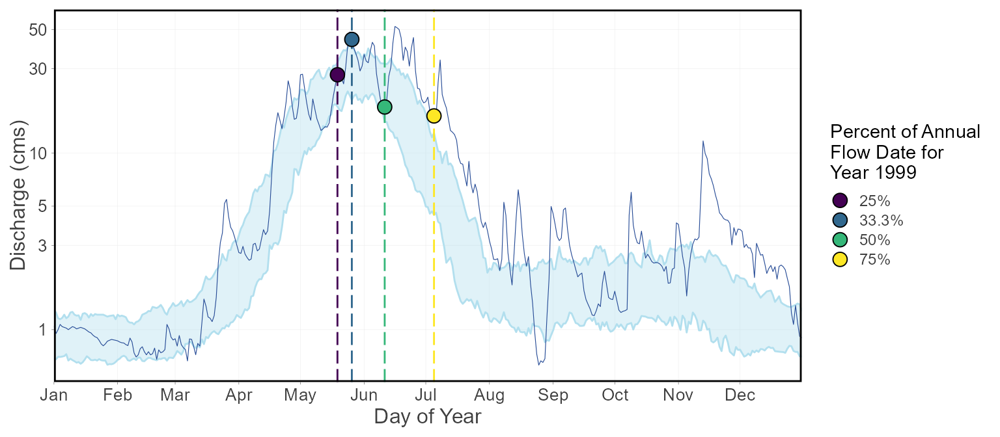
Annual low-flows
The calc_annual_lowflows() calculates the annual minimum
values, the day of year, and dates of specified rolling mean days (can
do multiple days if desired).
calc_annual_lowflows(station_number = "08NM116",
start_year = 1974) STATION_NUMBER Year Min_1_Day Min_1_Day_DoY Min_1_Day_Date Min_3_Day
1 08NM116 1974 0.447 333 1974-11-29 0.5333333
2 08NM116 1975 0.320 11 1975-01-11 0.3783333
3 08NM116 1976 0.736 38 1976-02-07 0.7406667
4 08NM116 1977 0.564 73 1977-03-14 0.6273333
5 08NM116 1978 0.532 55 1978-02-24 0.6296667
6 08NM116 1979 0.411 268 1979-09-25 0.4156667
Min_3_Day_DoY Min_3_Day_Date Min_7_Day Min_7_Day_DoY Min_7_Day_Date
1 334 1974-11-30 0.6018572 346 1974-12-12
2 39 1975-02-08 0.4158571 41 1975-02-10
3 63 1976-03-03 0.7564286 65 1976-03-05
4 252 1977-09-09 0.6865714 79 1977-03-20
5 3 1978-01-03 0.6642857 5 1978-01-05
6 269 1979-09-26 0.4370000 270 1979-09-27
Min_30_Day Min_30_Day_DoY Min_30_Day_Date
1 0.6645667 358 1974-12-24
2 0.4937667 58 1975-02-27
3 0.7988333 66 1976-03-06
4 0.7876667 81 1977-03-22
5 0.7551000 16 1978-01-16
6 0.5684333 287 1979-10-14The annual low flow values and the day of the low flow values can be
plotted, separately, using the plot_annual_lowflows()
function.
plot_annual_lowflows(station_number = "08NM116",
start_year = 1974) $Annual_Low_Flows
$Annual_Low_Flows_Dates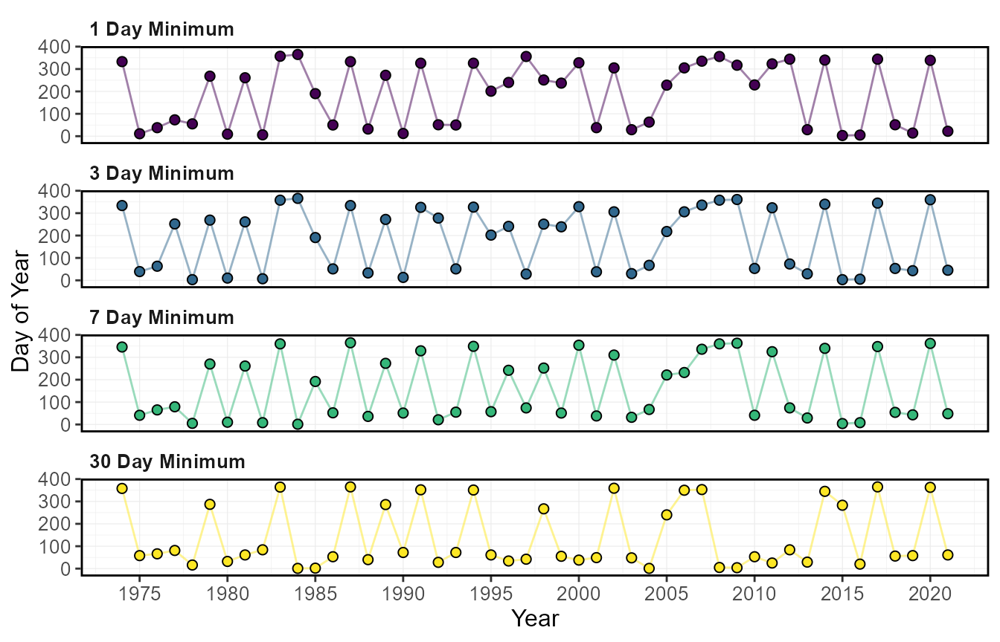
Annual high flows
The calc_annual_highflows() calculates the annual
maximum values, the day of year, and dates of specified rolling mean
days (can do multiple days if desired).
calc_annual_highflows(station_number = "08NM116",
start_year = 1974) STATION_NUMBER Year Max_1_Day Max_1_Day_DoY Max_1_Day_Date Max_3_Day
1 08NM116 1974 66.0 168 1974-06-17 64.26667
2 08NM116 1975 48.7 153 1975-06-02 47.46667
3 08NM116 1976 71.1 168 1976-06-16 54.93333
4 08NM116 1977 36.0 123 1977-05-03 33.00000
5 08NM116 1978 44.5 157 1978-06-06 42.66667
6 08NM116 1979 43.0 147 1979-05-27 40.16667
Max_3_Day_DoY Max_3_Day_Date Max_7_Day Max_7_Day_DoY Max_7_Day_Date
1 170 1974-06-19 62.21429 171 1974-06-20
2 155 1975-06-04 41.85714 158 1975-06-07
3 170 1976-06-18 45.02857 173 1976-06-21
4 159 1977-06-08 27.11429 161 1977-06-10
5 157 1978-06-06 37.01429 159 1978-06-08
6 147 1979-05-27 34.15714 148 1979-05-28
Max_30_Day Max_30_Day_DoY Max_30_Day_Date
1 47.63000 174 1974-06-23
2 33.07667 178 1975-06-27
3 31.15000 173 1976-06-21
4 20.15000 160 1977-06-09
5 26.74333 166 1978-06-15
6 23.97000 154 1979-06-03The annual high flow values and the day of the high flow values can
be plotted, separately, using the plot_annual_highflows()
function.
plot_annual_highflows(station_number = "08NM116",
start_year = 1974) $Annual_High_Flows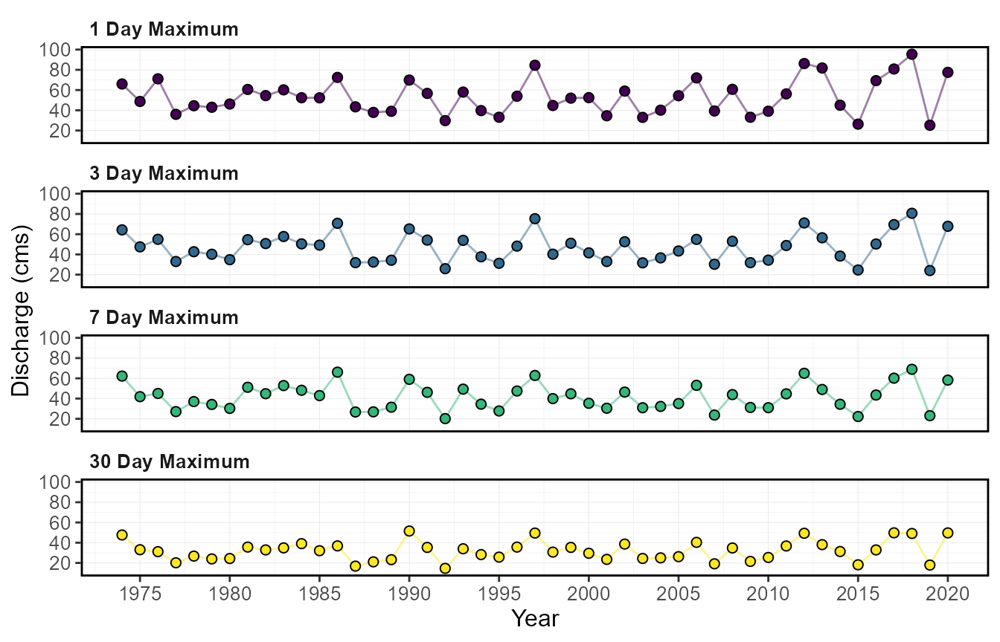
$Annual_High_Flows_Dates
Annual extreme (both high and low) flows
Similar to *_annual_lowflows() and
*_annual_highflows(), calc_annual_extremes()
calculates the annual maximum and minimum values, the day of year, and
dates of specified rolling mean days and specified months for each of
the high and low flows.
calc_annual_extremes(station_number = "08NM116",
roll_days_min = 7,
roll_days_max = 3,
start_year = 1974) STATION_NUMBER Year Min_7_Day Min_7_Day_DoY Min_7_Day_Date Max_3_Day
1 08NM116 1974 0.6018572 346 1974-12-12 64.26667
2 08NM116 1975 0.4158571 41 1975-02-10 47.46667
3 08NM116 1976 0.7564286 65 1976-03-05 54.93333
4 08NM116 1977 0.6865714 79 1977-03-20 33.00000
5 08NM116 1978 0.6642857 5 1978-01-05 42.66667
6 08NM116 1979 0.4370000 270 1979-09-27 40.16667
Max_3_Day_DoY Max_3_Day_Date
1 170 1974-06-19
2 155 1975-06-04
3 170 1976-06-18
4 159 1977-06-08
5 157 1978-06-06
6 147 1979-05-27The annual extremes values and the days can be plotted:
plot_annual_extremes(station_number = "08NM116",
roll_days_min = 7,
roll_days_max = 3,
start_year = 1974)$Annual_Extreme_Flows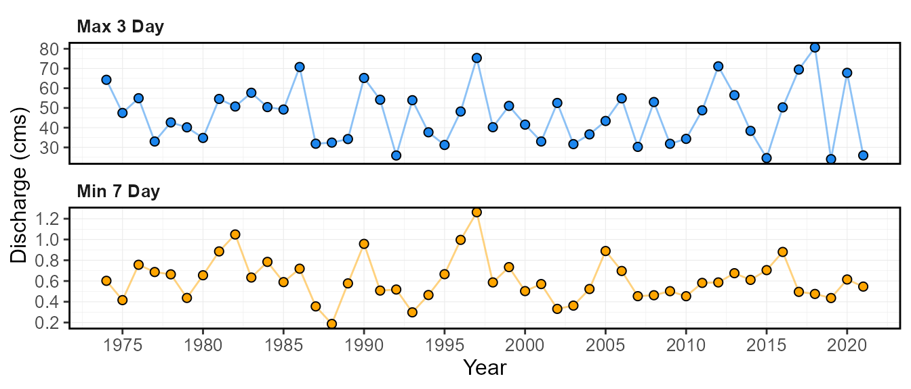
$Annual_Extreme_Flows_Dates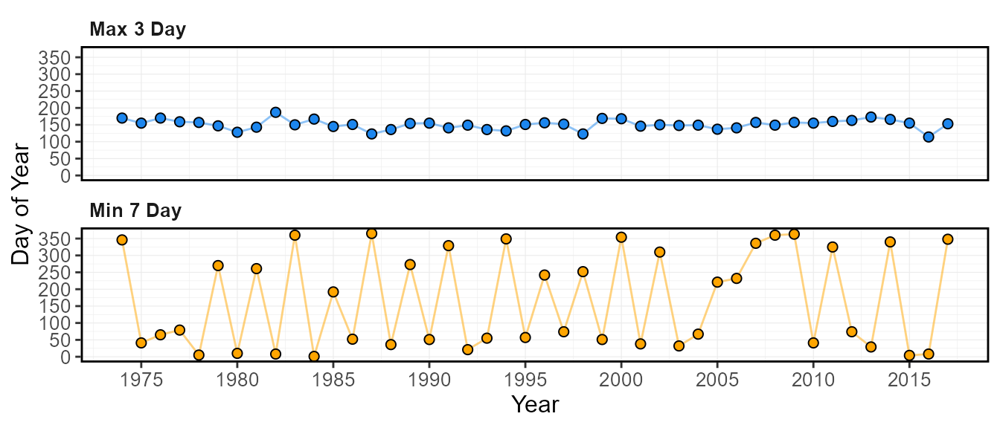
The annual extremes values and the days for a given year can also be plotted:
plot_annual_extremes_year(station_number = "08NM116",
roll_days_min = 7,
roll_days_max = 3,
start_year = 1974,
year_to_plot = 1999)$Annual_Extremes_YearWarning in ggplot2::scale_y_log10(breaks = scales::log_breaks(n = 8, base = 10), :
[1m
[22m
[32mlog-10
[39m transformation introduced infinite values.
[1m
[22m
[32mlog-10
[39m transformation introduced infinite values.
Number of normal (and above/below normal) days per year
The calc_annual_normal_days() calculates the number of
days per year that are normal and above and below “normal”, “normal”
typically defined as 25th and 75th percentiles. The normal limits can be
determined using the normal_percentiles argument, listing
the lower and upper normal ranges, respectively
(e.g. normal_percentiles = c(25, 75)). The function
calculates the lower and upper percentiles for each day of the year over
all years and sums all days that are within and above or below the daily
normal ranges for a given year. Rolling averages can also be used in
this function using the roll_days argument.
calc_annual_normal_days(station_number = "08NM116",
start_year = 1974) STATION_NUMBER Year Normal_Days Below_Normal_Days Above_Normal_Days
1 08NM116 1974 210 77 78
2 08NM116 1975 197 135 33
3 08NM116 1976 172 51 143
4 08NM116 1977 253 103 9
5 08NM116 1978 237 16 112
6 08NM116 1979 144 150 71Each of the above, below, and normal days can be plotted using the
plot_annual_normal_days() function.
plot_annual_normal_days(station_number = "08NM116",
start_year = 1974) $Annual_Normal_Days
The daily flows with normal categories for a given year can also be plotted.
plot_annual_normal_days_year(station_number = "08NM116",
year_to_plot = 1999) $Annual_Normal_Days_Year
Calculating all annual statistics
The calc_all_annual_stats() calculates all statistics
that have a single annual value. This includes all the
calc_annual_* and the
calc_monthly_statistics() functions. Several arguments
provided for customization of the statistics. There is no corresponding
plotting function for this calculation function.
colnames(calc_all_annual_stats(station_number = "08NM116",
start_year = 1974)) [1] "STATION_NUMBER" "Year" "Annual_Maximum"
[4] "Annual_Mean" "Annual_Median" "Annual_Minimum"
[7] "Annual_P10" "Annual_P90" "Min_1_Day"
[10] "Min_1_Day_DoY" "Min_3_Day" "Min_3_Day_DoY"
[13] "Min_7_Day" "Min_7_Day_DoY" "Min_30_Day"
[16] "Min_30_Day_DoY" "Total_Volume_m3" "Jan-Jun_Volume_m3"
[19] "Jul-Dec_Volume_m3" "Jan-Mar_Volume_m3" "Apr-Jun_Volume_m3"
[22] "Jul-Sep_Volume_m3" "Oct-Dec_Volume_m3" "Total_Yield_mm"
[25] "Jan-Jun_Yield_mm" "Jul-Dec_Yield_mm" "Jan-Mar_Yield_mm"
[28] "Apr-Jun_Yield_mm" "Jul-Sep_Yield_mm" "Oct-Dec_Yield_mm"
[31] "DoY_25pct_TotalQ" "DoY_33pct_TotalQ" "DoY_50pct_TotalQ"
[34] "DoY_75pct_TotalQ" "Normal_Days" "Below_Normal_Days"
[37] "Above_Normal_Days" "Jan_Mean" "Jan_Median"
[40] "Jan_Maximum" "Jan_Minimum" "Jan_P10"
[43] "Jan_P20" "Feb_Mean" "Feb_Median"
[46] "Feb_Maximum" "Feb_Minimum" "Feb_P10"
[49] "Feb_P20" "Mar_Mean" "Mar_Median"
[52] "Mar_Maximum" "Mar_Minimum" "Mar_P10"
[55] "Mar_P20" "Apr_Mean" "Apr_Median"
[58] "Apr_Maximum" "Apr_Minimum" "Apr_P10"
[61] "Apr_P20" "May_Mean" "May_Median"
[64] "May_Maximum" "May_Minimum" "May_P10"
[67] "May_P20" "Jun_Mean" "Jun_Median"
[70] "Jun_Maximum" "Jun_Minimum" "Jun_P10"
[73] "Jun_P20" "Jul_Mean" "Jul_Median"
[76] "Jul_Maximum" "Jul_Minimum" "Jul_P10"
[79] "Jul_P20" "Aug_Mean" "Aug_Median"
[82] "Aug_Maximum" "Aug_Minimum" "Aug_P10"
[85] "Aug_P20" "Sep_Mean" "Sep_Median"
[88] "Sep_Maximum" "Sep_Minimum" "Sep_P10"
[91] "Sep_P20" "Oct_Mean" "Oct_Median"
[94] "Oct_Maximum" "Oct_Minimum" "Oct_P10"
[97] "Oct_P20" "Nov_Mean" "Nov_Median"
[100] "Nov_Maximum" "Nov_Minimum" "Nov_P10"
[103] "Nov_P20" "Dec_Mean" "Dec_Median"
[106] "Dec_Maximum" "Dec_Minimum" "Dec_P10"
[109] "Dec_P20" Plotting annual means
The plot_annual_means() function provides a way to
visualize how annual means fluctuate around the long-term mean. The
x-axis is located at the long-term mean annual discharge (mean of all
discharge values over all years) and the bars shows the annual means.
The plot is essentially an anomaly plot but with their y-value matching
the mean value and not difference from the mean.
plot_annual_means(station_number = "08NM116",
start_year = 1974) $Annual_Means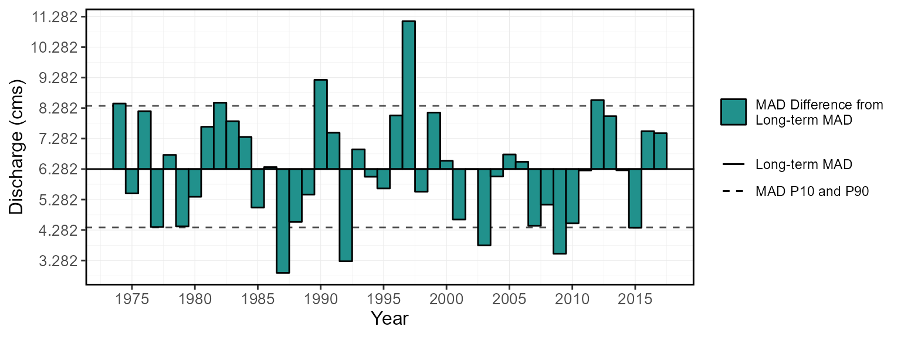
7. Functions for Computing Analyses
There are several functions that provide more in-depth analyses.
These functions begin with compute_ instead of
calc_ and typically produce more than just a tibble data
frame of statistics, like the calc_ functions. Most of
these produce a list of objects, consisting of both tibbles and plots.
There are three groups of analysis functions: annual trending, annual
volume frequency analyses, and a full analysis (of most
fasstr functions). There is a separate vignette for each
analysis type to provide more information.
Annual Trending Analysis
The compute_annual_trends() function calculates
prewhitened non-parametric annual trends on streamflow data using the zyp
package. The function calculates various annual metrics using the
calc_all_annual_stats() function and then calculates and
plots the trending data. The magnitude of trends is first computed using
the Theil-Sen approach. Depending on the selected method, either
"zhang" or "yuepilon", the trends are adjusted
for autocorrelation and then a Mann-Kendall test for trend is applied to
the series. The zhang method is recommended for hydrologic
applications over yuepilon. See the zyp
package and the trending
vignette for more information.
The compute_annual_trends() function outputs several
objects in a list:
- $Annual_Trends_Data - a tibble of annual data from the
calc_all_annual_stats()function used for trending - $Annual_Trends_Results - a tibble of annual trending results, from
both
zypandfasstr - $Annual_* - a
ggplot2object for every annual statistic trended, with the slope plotted if an alpha value is chosen using thezyp_alphaargument (ex.zyp_alpha = 0.05).
Volume Frequency Analyses
There are five fasstr functions that perform various
volume frequency analyses. Frequency analyses are used to determine
probabilities of events of certain sizes (typically annual high or low
flows). The analyses produce plots of event series and computed
quantiles fitted from either Log-Pearson Type III or Weibull probability
distributions. See the frequency
analysis vignette for more information.
The compute_annual_frequencies() performs an annual
daily (or selected duration using roll_days argument)
low-flow (by default) or high-flow (using use_max = TRUE
argument) frequency analysis on annual series. This analysis uses the
daily mean lows or highs. The
compute_hydat_peak_frequencies() function performs an
annual instantaneous low (by default) or high peak frequency analysis.
The data argument cannot be used for the HYDAT peak
analysis. Both functions output several objects in a list:
- $Freq_Analysis_Data - Tibble of computed annual minimums (or maximums)
- $Freq_Plot_Data - Tibble of plotting coordinates used in the frequency plot
- $Freq_Plot -
ggplot2object of the frequency plot - $Freq_Fitting - List of
fitdistrplusobjects of the fitted distributions. - $Freq_Fitted_Quantiles - Tibble with fitted quantiles.
The compute_frequency_quantile() function performs
annual daily (or selected duration) low-flow (by default) or high-flow
(using use_max = TRUE argument) frequency analysis on
annual series but only returns the fitted quantile based on the selected
return period. Both the numeric arguments roll_days and
return_period are required. It results in a single value.
For example, supplying roll_days = 7 and
return_period = 10 to the function with a data set will
return the 7-day low-flow with a 10-year return period (i.e. 7Q10).
To compute a volume frequency analysis on custom data, use the
compute_frequency_analysis() function. The data points to
be used in the analysis must be provided in a data frame with a column
of events (or years), the flow values (values), and the measure (or the
type of value it is, “7-day lows”, for example. All other data filtering
options are not included.
Full Analysis
If desired, a suite of fasstr functions can be computed
using the compute_full_analysis(), producing lists of
tables and plots organized in lists by analysis type.
write_full_analysis() will create both all the objects and
also write data to your computer, in Excel-ready formats and image
files. The filetypes of plots and tables can be set using the
plot_filetype and table_filetype arguments,
respectively. See the full
analysis vignette for more information on customizing the analyses
and statistics.
The plots and tables are grouped into the following analyses:
- Screening
- Long-term
- Annual
- Monthly
- Daily
- Annual Trends
- Low-flow Frequencies
8. Customizing Functions with Arguments - Data Filtering and Options
While tidying and filtering data to desired parameters or time
periods can be completed to flow data frames prior to passing them onto
fasstr functions, a suite of function arguments have been
provided to allow for in-function customization of tidying and
filtering. Described here are some of the options available in
fasstr functions on how to handle missing dates, filter for
specific years or months, and select desired statistics from some of the
fasstr functions. Not all functions have all these options
see the documentation
for each function usage (can also use ?calc_annual_stats to
see documentation in R).
Handling Missing Dates
Most functions will automatically
(ignore_missing = FALSE) not calculate a statistic for a
given period (a year or month or day of year, for example) if there is a
date with missing data (NA value) and will result in an NA
value or will not plot (base na.rm = FALSE). For example,
if there at least one missing day for a given year, an annual statistic
will not be calculated for that year. A warning message will appear in
the console indicating as such to ensure the user is aware of missing
data. See the following code for an example with missing dates:
calc_annual_stats(station_number = "08NM116")If you want to calculate the statistics regardless of the number of
missing dates per time period, use the
ignore_missing = TRUE argument.
calc_annual_stats(station_number = "08NM116",
ignore_missing = TRUE)Starting with fasstr 0.4.0, to allow a certain percentage of missing
dates per period and still calculate a statistic, the argument
allow_missing (and allow_missing_annual and
allow_missing_monthly in come cases) will override the
ignore_missing argument in certain functions. A numeric
value between 0 and 100 indicating the percentage of missing dates
allowed to be included is provided to the argument to calculate a
statistic (0 to 100 percent). For example, if 3-4 days of missing dates
are permitted per year to calculate annual means, percentiles or
extremes, then 1% of days can be applied as
allowed_missing = 1.
To maintain usage of ignore_missing, if
ignore_missing = FALSE then it defaults to 0
(zero missing dates allowed), and if ignore_missing = TRUE
then it defaults to 100 (any missing dates allowed). This
argument is included only in functions that calculate annual or monthly
means, percentiles, minimums, and maximums including various
calc_annual_* and plot_annual_* functions,
calc_monthly_stats(), plot_monthly_stats(),
and most compute_* functions. See function documentation to
see if included. The following example allows the data to have 25%, or
~91 days, of missing dates, to calculate annual statistics:
calc_annual_stats(station_number = "08NM116",
allowed_missing = 25)Dates Filtering
There are several options in the function that allow you choose year
options and to filter for specific time periods. If there is a specific
period, years or months, to be analyzed there are several options to
customize the data supplied. While filtering of data can be done to your
flow data set prior supplying it to a function (using dplyr
filtering, for example), these options provide quick solutions for
in-function filtering that can be incorporated into a workflow.
Water year and start month
By default, the functions will analyze/group/filter data by calendar
years (Jan-Dec). However, some analyses require use of water years, or
hydrologic years, starting in other months. If use of water years is
desired not starting in January, then set water_year_start
with a month other than 1. The water year is identified by the calendar
year in which it ends. For example, a water year from Oct 2000 to Sep
2001 would be water year 2001.
Example of a default water year, starting in October:
calc_annual_stats(station_number = "08NM116",
ignore_missing = TRUE,
water_year_start = 9)Example of a water year starting in August:
calc_annual_stats(station_number = "08NM116",
ignore_missing = TRUE,
water_year_start = 8)Selecting and excluding years
To specify select years used in your analysis, the
start_year and end_year arguments (providing a
single value) can filter the years. Using the exclude_years
argument (providing a single or vector of years) will allow you to
remove certain years from the analysis. Leaving these arguments blank
will include all years in the data set for the analysis.
Example of filtering for start and end years:
calc_annual_stats(station_number = "08NM116",
start_year = 1980,
end_year = 2010)Examples of removing certain years (outliers, bad data, etc.) using exclude_years:
calc_annual_stats(station_number = "08NM116",
start_year = 1980,
end_year = 2010,
exclude_years = 1982)
calc_annual_stats(station_number = "08NM116",
start_year = 1980,
end_year = 2010,
exclude_years = c(1982:1984))Using only years with complete data
If your data has missing dates, but you would like to use only those
years with complete data, some functions utilize the
complete_years argument where the data will automatically
be filtered for years with complete data and statistics will be
calculated. Only years with complete data will be included into the
following example.
calc_longterm_daily_stats(station_number = "08NM116",
complete_years = TRUE)Some functions, like below, require only years with complete data (statistics are based on full years of data), so years with missing dates will be automatically ignored:
calc_annual_flow_timing(station_number = "08NM116")Selecting for months
Most functions allow you to specify select months used in your
analysis, using the months argument. By providing a vector
of months (1 through 12) only those months will be used in an analysis.
For example, using the months argument with the
calc_annual_stats() function will calculate the annual
statistics for only those months listed. So, if summer statistics are
required you supply months = 6:8 to the function. Leaving
this arguments blank will include all months in the data set for the
analysis. As of fasstr 0.4.0, the months argument is now
included in all calc_, plot_, and
compute_ functions to allow for selecting of specific
months in all analyses, including calc_all_annual_stats()
and compute_annual_trends().
Example of filtering for months June through August:
calc_annual_stats(station_number = "08NM116",
start_year = 1980,
end_year = 2010,
months = 6:8)Example of flow timing / center of volume in winter/spring months:
calc_flow_timing(station_number = "08NM116",
start_year = 1980,
end_year = 2010,
months = 1:7)A few functions, including the
calc_longterm_daily_stats(),
plot_longterm_daily_stats(), and
plot_flow_duration() functions will allow you to add a
customized time period to your data frame or plot. Using the
custom_months argument you can list a vector of months
(numeric 1:12). By default, the data will be labelled as “Custom-Months”
but can be customized by providing a character string to the
custom_months_label argument.
Example of custom months and labeling:
calc_longterm_daily_stats(station_number = "08NM116",
start_year = 1980,
end_year = 2010,
custom_months = 6:8,
custom_months_label = "Summer")Rolling averages
Some functions allow you to specify analyzing the data using rolling
mean data as opposed to the daily means. For those functions with the
roll_days and roll_align arguments, analyses
will be computed on the daily mean by default (can leave them blank if
so). If choosing to conduct an analysis on 7-day rolling means, you
would set roll_days = 7. Some functions allow multiple
rolling days to be provided (see function documentation). The
roll_align argument determines the direction of the rolling
mean: see the “Adding rolling means” portion in Section 4 to see how the
roll_days and roll_align work together.
Example of a 7-day rolling mean analysis (single
roll_days use):
calc_annual_stats(station_number = "08NM116",
start_year = 1980,
end_year = 2010,
roll_days = 7)Example of a 7- and 30-day rolling mean analysis (multiple
roll_days use):
plot_annual_lowflows(station_number = "08NM116",
start_year = 1980,
end_year = 2010,
roll_days = c(7,30))[[1]]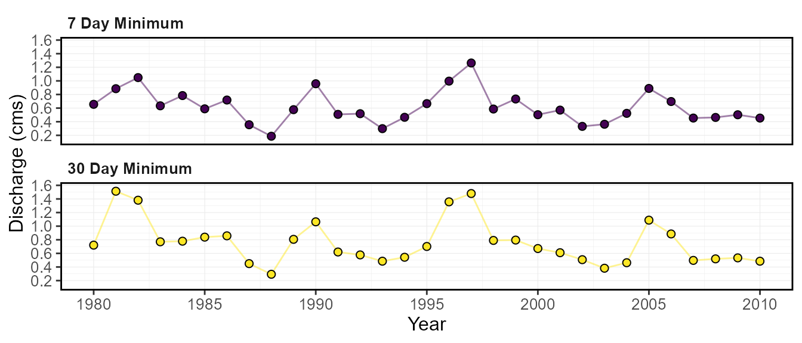
Percentiles and other statistics
Each fasstr function comes with their default statistics
to be calculated. While some cannot be changed (some plotting
functions), most have the ability to customize what is calculated. Look
up the default settings for each function in their documentation
(?calc_longterm_daily_stats for example).
By default, the basic summary statistics functions will calculate the
mean, median, maximum, and minimum values for each time period; these
will automatically be calculated can cannot be removed by an argument
option (can remove afterwards if necessary). These functions also
calculate default percentiles, which can be customized by changing the
desired percentiles by providing a numeric vector of numbers (between 0
and 100) to the percentiles argument.
This example shows the default percentiles for the
calc_annual_stats() function (10 and 90th percentiles):
calc_annual_stats(station_number = "08NM116",
start_year = 1980,
end_year = 2010)This example shows custom percentiles for the
calc_annual_stats() function (5 and 25th percentiles):
calc_annual_stats(station_number = "08NM116",
start_year = 1980,
end_year = 2010,
percentiles = c(5,25))The following are some examples of how to customize results from other types of functions. See function documentations for full argument uses.
Example of calculating dates of the 10 and 20 percent of total annual flow:
calc_annual_flow_timing(station_number = "08NM116",
start_year = 1980,
end_year = 2010,
percent_total = c(10,20))Example of plotting the number of normal and above/below normal days per year of the 10th and 90th percentiles (25th and 75th percentiles are default):
plot_annual_normal_days(station_number = "08NM116",
start_year = 1980,
end_year = 2010,
normal_percentiles = c(10,90))$Annual_Normal_Days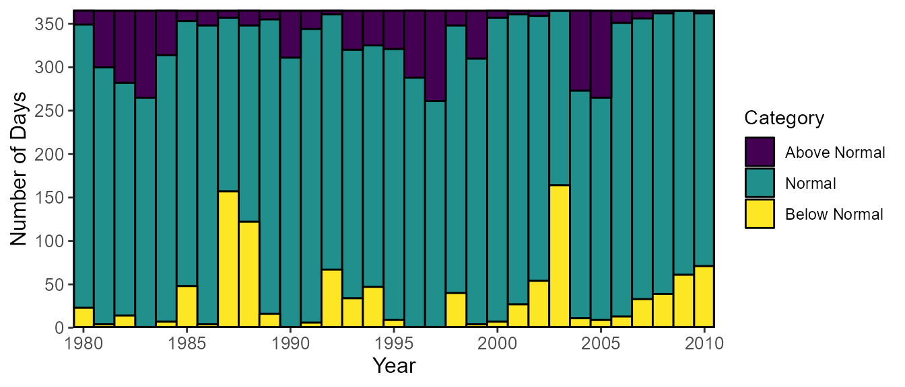
Data frame options
An option when working with the functions that produce data frames is to transpose the rows and columns of the data. Most functions by default provide data results such there are columns of statistics for each station and time period. See the example here:
calc_longterm_daily_stats(station_number = "08NM116",
start_year = 1980,
end_year = 2010) STATION_NUMBER Month Mean Median Maximum Minimum P10 P90
1 08NM116 Jan 1.201563 0.9650 9.50 0.160 0.5480 1.850
2 08NM116 Feb 1.146177 0.9675 4.41 0.140 0.4890 1.970
3 08NM116 Mar 1.818723 1.3800 9.86 0.380 0.7200 3.700
4 08NM116 Apr 8.333600 6.2250 37.90 0.505 1.5400 17.810
5 08NM116 May 23.585036 20.9000 74.40 3.830 9.3700 40.800
6 08NM116 Jun 21.291149 19.4000 84.50 0.450 6.0990 38.630
7 08NM116 Jul 6.421402 3.9400 54.50 0.332 1.0200 14.700
8 08NM116 Aug 2.114699 1.5700 13.30 0.427 0.7790 4.210
9 08NM116 Sep 2.206682 1.6200 14.60 0.364 0.7397 4.352
10 08NM116 Oct 2.100921 1.6500 15.20 0.267 0.8030 3.950
11 08NM116 Nov 2.024817 1.7100 11.70 0.260 0.5618 3.781
12 08NM116 Dec 1.313862 1.0800 7.30 0.342 0.5000 2.370
13 08NM116 Long-term 6.141736 1.8900 84.50 0.140 0.6850 19.300In some circumstances, however, it may be more convenient to wrangle
the data such that there are columns for stations (or groupings) and a
single column with all statistics, and then the values are placed in
columns for each respective time period. See the following example when
setting transpose = TRUE.
calc_longterm_daily_stats(station_number = "08NM116",
start_year = 1980,
end_year = 2010,
transpose = TRUE) STATION_NUMBER Statistic Jan Feb Mar Apr May Jun
1 08NM116 Mean 1.201563 1.146177 1.818723 8.3336 23.58504 21.29115
2 08NM116 Median 0.965000 0.967500 1.380000 6.2250 20.90000 19.40000
3 08NM116 Maximum 9.500000 4.410000 9.860000 37.9000 74.40000 84.50000
4 08NM116 Minimum 0.160000 0.140000 0.380000 0.5050 3.83000 0.45000
5 08NM116 P10 0.548000 0.489000 0.720000 1.5400 9.37000 6.09900
6 08NM116 P90 1.850000 1.970000 3.700000 17.8100 40.80000 38.63000
Jul Aug Sep Oct Nov Dec Long.term
1 6.421402 2.114699 2.206682 2.100921 2.024817 1.313862 6.141736
2 3.940000 1.570000 1.620000 1.650000 1.710000 1.080000 1.890000
3 54.500000 13.300000 14.600000 15.200000 11.700000 7.300000 84.500000
4 0.332000 0.427000 0.364000 0.267000 0.260000 0.342000 0.140000
5 1.020000 0.779000 0.739700 0.803000 0.561800 0.500000 0.685000
6 14.700000 4.210000 4.352000 3.950000 3.781000 2.370000 19.299999Plotting options
Logarithmic discharge scale
Depending on the plotting function, discharge data will be plotted
using a linear or a logarithmic scale (depending on the scale of data).
This can be altered using the log_discharge argument. Here
is example of plotting with a linear scale (default
log_discharge = FALSE):
plot_annual_stats(station_number = "08NM116",
start_year = 1980,
end_year = 2010)$Annual_Statistics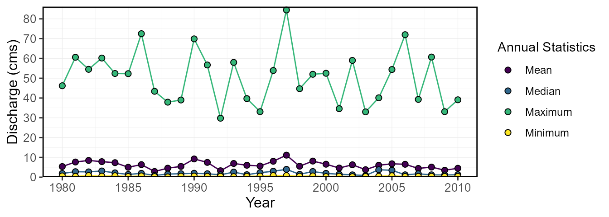
Set the discharge scale to be logarithmic
(log_discharge = TRUE):
plot_annual_stats(station_number = "08NM116",
start_year = 1980,
end_year = 2010,
log_discharge = TRUE)$Annual_Statistics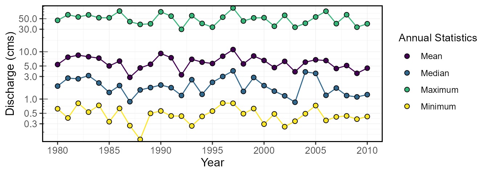
Including a standard title on the plot
The logical include_title argument adds the station
number (or grouping identifier from the groupings
argument), and in some cases the statistics as well. The argument’s
default is FALSE.
Example of including a title when plotting
(include_title = TRUE):
plot_annual_stats(station_number = "08NM116",
start_year = 1980,
end_year = 2010,
include_title = TRUE)$Annual_StatisticsExample of including a title when plotting
include_title = TRUE where the statistic is also
displayed:
plot_monthly_stats(station_number = "08NM116",
start_year = 1980,
end_year = 2010,
include_title = TRUE)[[1]]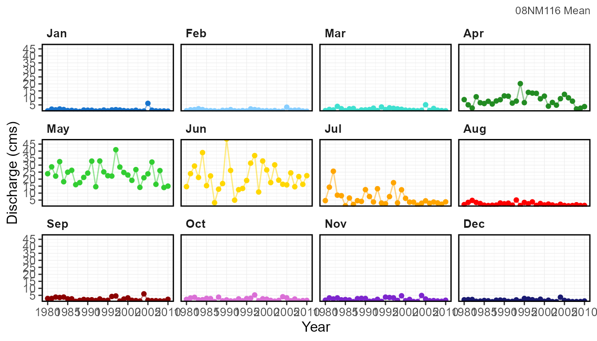
Customizing a plot by using additional ggplot2
functions:
library(ggplot2)
# Create the plot list and extract the plot using [[1]]
plot <- plot_daily_stats(station_number = "08NM116", start_year = 1980)[[1]]
# Customize the plot with various `ggplot2` functions
plot +
geom_hline(yintercept = 1.5, colour = "red", linetype = 2, size = 1) +
geom_vline(xintercept = as.Date("1900-03-01"), colour = "darkgray", linetype = 1, size = 0.5) +
geom_vline(xintercept = as.Date("1900-08-05"), colour = "darkgray", linetype = 1, size = 0.5) +
ggtitle("Mission Creek Annual Hydrograph") +
ylab("Flow (cms)")Warning:
[1m
[22mUsing `size` aesthetic for lines was deprecated in ggplot2 3.4.0.
[36mℹ
[39m Please use `linewidth` instead.
[90mThis warning is displayed once every 8 hours.
[39m
[90mCall `lifecycle::last_lifecycle_warnings()` to see where this warning was
[39m
[90mgenerated.
[39m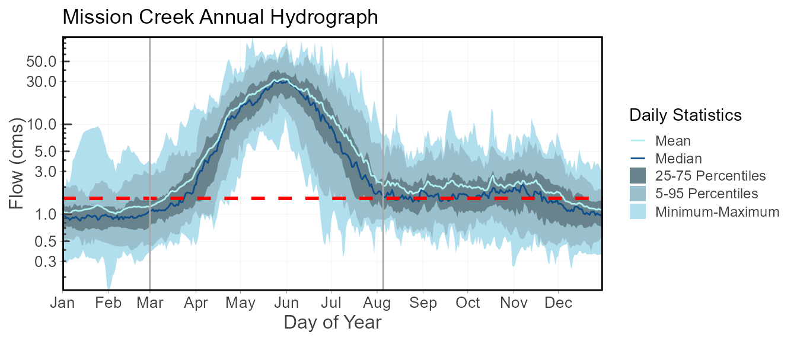
9. Writing Tables and Plots
To support saving the fasstr tables and plots to a
directory, there are several functions included in this package. These
include the following:
-
write_flow_data()- write a streamflow data set as a .xlsx, .xls, or .csv file -
write_results()- write a data frame as a .xlsx, .xls, or .csv file -
write_plots()- write plots from a list into a directory or PDF document -
write_objects_list()- write all tables and plots contained in a list
Writing a flow data set
To directly save a streamflow data set from HYDAT or your own custom
data frame onto your computer, you can use the
write_flow_data() function. By listing the
station_number or data data frame, the data
set will save a file into the working directory, unless otherwise
specified using the file_name argument. If using the
station_number argument and listing only one station
without listing a name with file_name, the name will
include the number and followed by “_daily_data.xlsx”; and if multiple
stations are listed the name will be “HYDAT_daily_data.xlsx”. When using
the data argument without listing a name with
file_name the default name will be
fasstr_daily_data.xlsx. To use another file type than
“xlsx” (options are “xlsx”, “xls”, or “csv”) provide a file name using
the file_name argument with the desired extension. Other
argument options for this function include:
- selecting for the start and end years or dates
- choosing to use water years when selecting specific years
- selecting whether or not to fill dates with missing data with NA’s
(logical
fill_missingargument) - selecting the number of digits to round the flow values (numeric
digitsargument)
The following will write an “xlsx” file called “08NM116_data_data.xlsx” into your working directory that includes all daily flow data from that station in HYDAT:
write_flow_data(station_number = "08NM116")The following is an example of possible customization:
Writing a data frame
While you can use the base R write_csv() or
writexl package functions to save your data, the package
provides a function with options to choose for file type and the
rounding of digits. To directly save a data frame onto your computer you
can use the write_results() function. This function allows
you to decide on file extensions of “xlsx”, “xls”, or “csv” by including
it in the file_name argument when you name the file. This
function also allows you to round all numeric columns by selecting the
number of digits using the numeric digits argument.
annual_data <- calc_annual_stats(station_number = "08NM116")
write_results(data = annual_data,
digits = 3,
file_name = "mission_creek_annual_flows.xlsx")Writing a list of plots
As all plots produced with this package are contained within lists, a
function is provided to assist in saving a list of plots into either a
folder, where all plot files are named by the object names within the
list, or combined PDF document, using the write_plots()
function. The name of the folder or PDF document is provided using the
folder_name argument. If the folder does not exist, one
will be created. Options to customize output size with
width, height, units and
dpi arguments, as similar to those in
ggplots2:ggsave(), can also be used.
The following will save each annual plot as a “png” file in a folder called “Annual Plots” in the working directory:
annual_plots <- plot_annual_stats(station_number = c("08NM116","08NM242"))
write_plots(plots = annual_data,
folder_name = "Annual Plots",
plot_filetype = "png")The following will save all annual plots as combined “pdf” document called “Annual Plots” in the working directory with each plot on a different page:
annual_plots <- plot_annual_stats(station_number = c("08NM116","08NM242"))
write_plots(plots = annual_data,
folder_name = "Annual Plots",
combined_pdf = TRUE)If you would prefer to save the plots using other functions, like the
ggplot2::ggsave() function, the desired plot must subsetted
from the list first so the object provided the function is a plot object
and not a list. Individual plots can be subsetted from their lists using
either the dollar sign, $
(e.g. one_plot <- plots$plotname), or double square
brackets, [ ] (e.g. one_plot <- plots[[plotname]] or
one_plot <- plots[[1]]).
Writing a list of data frames and plots
As some objects produced with this package, mainly with the
compute_* functions, contain lists of both data frames and
ggplot2 objects, a function is provided, called
write_objects_list(), to assist in saving all objects
within the list into a designated directory folder, where all table and
plot files are named by the object names. The name of the folder is
provided using the folder_name argument. If the folder does
not exist, one will be created. The file type for tables and plots are
chosen using the table_filetype and
plot_filetype arguments respectively. There are also
options to customize plot output size with width,
height, units and dpi arguments,
as similar to those in ggplots2:ggsave() can also be
used.
The following will save all plots and tables in a folder called “Frequency Analysis” in the working directory:
freq_analysis <- compute_annual_frequencies(station_number = "08NM116")
write_objects_list(list = freq_analysis,
folder_name = "Frequency Analysis",
plot_filetype = "png",
table_filetype = "xlsx")